3.1 Overview
RhinoCommon is the .NET SDK for Rhino. It is used by Rhino plug-in developers to write .NET plug-ins for Rhino and Grasshopper. All Grasshopper scripting components can access RhinoCommon including all geometry objects and functions. For the whole namespace, see the RhinoCommon documentation.
In this chapter, we will focus on the part of the SDK dealing with Rhino geometry. We will show examples of how to create and manipulate geometry using the Grasshopper C# component.
The use of the geometry classes in the SDK requires basic knowledge in vector mathematics, transformations, and NURBS geometry. If you need to review or refresh your knowledge in these topics, then refer to the Essential Mathematics for Computational Design
If you recall from Chapter 2, we worked with value types such as int and double. Those are system built-in types provided by the programming language, C# in this case. We also learned that you can pass the value types to a function without changing the original variables (unless passed by reference using the ref keyword). We also learned that some types, such as objects, are always passed by reference. That means changes inside the function also changes the original value.
The system built-in types, whether they are value or reference types, are often very limiting in specialized programming applications. For example, in computer graphics, we commonly deal with points, lines, curves, or matrices. These types need to be defined by the SDK to ease the creation, storage, and manipulation of geometry data. Programming languages offer the ability to define new types using structures (value types) and classes (reference types). The RhinoCommon SDK defines many new types as we will see in this chapter.
3.2 Geometry Structures
RhinoCommon defines basic geometry types using structures. We will dissect the Point3d structure, show how to read in the documentation, and use it in a script. This should help you navigate and use other structures. Below is a list of the geometry structures:
| Structures | Summary description |
|---|---|
| Point3d | Location in 3D space. There are other points that have different dimensions such as: Point2d (parameter space point) and Point4d to represent control points. |
| Vector3d | Vector in 3D space. There is also Vector2d for vectors in parameter space. |
| Interval | Domain. Has min and max numbers |
| Line | A line defined by two points (from-to) |
| Plane | A plane defined by a plane origin, X-Axis, Y-Axis, and Z-Axis |
| Arc | Represents the value of a plane, two angles, and a radius in a subcurve of a circle |
| Circle | Defined by a plane and radius |
| Ellipse | Defined by a plane and 2 radii |
| Rectangle3d | Represents the values of a plane and two intervals that form an oriented rectangle |
| Cone | Represents the center plane, radius, and height values in a right circular cone |
| Cylinder | Represents the values of a plane, a radius, and two heights--on top and beneath--that define a right circular cylinder |
| BoundingBox | Represents the value of two points in a bounding box defined by the two extreme corner points.This box is therefore aligned to the world X, Y, and Z axes |
| Box | Represents the value of a plane and three intervals in an orthogonal, oriented box that is not necessarily parallel to the world Y, X, Z axes |
| Sphere | Represents the plane and radius values of a sphere |
| Torus | Represents the value of a plane and two radii in a torus that is oriented in 3D space |
| Transform | 4x4 matrix of numbers to represent geometric transformation |
3.2.1 The Point3d Structure
The Point3d type includes three fields (X, Y, and Z). It defines a number of properties and also has constructors and methods. We will walk through all the different parts of Point3d and how it is listed in the RhinoCommon documentation. First, you can navigate to Point3d from the left menu under the Rhino.Geometry namespace. When you click on it, the full documentation appears on the right. At the very top, you will see the following:
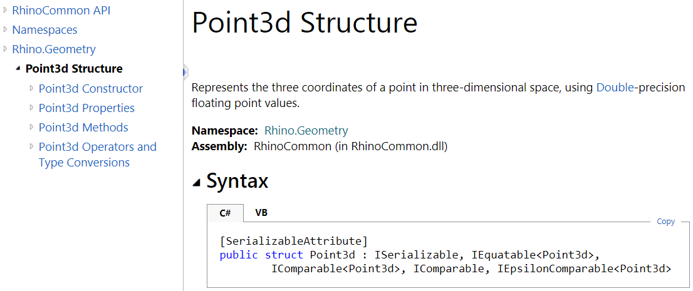
Here is a break down of what each part in the above Point3d documentation means:
| Part | Description |
|---|---|
| Point3D Structure Represents the ... | Title and description |
| Namespace: Rhino.Geometry | The namespace that contains Point3d |
| Assembly: RhinoCommon (in RhinoCommon.dll) | The assembly that includes that type. All geometry types are part of the RhinoCommon.dll. |
| /[SerializableAttribute/] | Allow serializing the object |
| public struct Point3d | public: public access: your program can instantiate an object of that typestruct: structure value type.Point3d: name of your structure |
| : ISerializable,
IEquatable |
The “:” is used after the struct name to indicate what the struct implements. Structures can implement any number of interfaces. An interface contains a common functionality that a structure or a class can implement. It helps with using consistent names to perform similar functionality across different types. For example, IEquatable interface has a method called “Equal”. If a structure implements IEquatable, it must define what it does (in Point3d, it compares all X, Y, and Z values and returns true or false). |
Point3d Constructors
Structures define constructors to instantiate the data. One of the Point3d constructors takes three numbers to initialize the values of X, Y, and Z. Here are all the constructors of the Point3d structure .
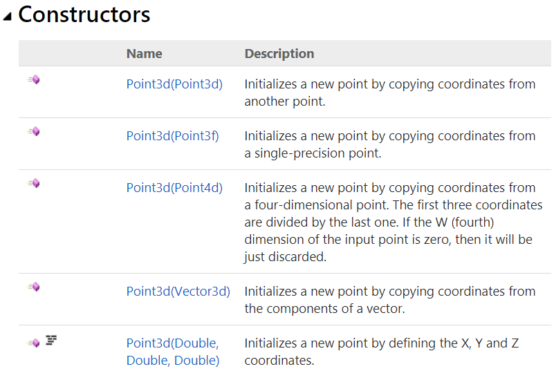
The following example shows how to define a variable of type Point3d using a GH C# component.
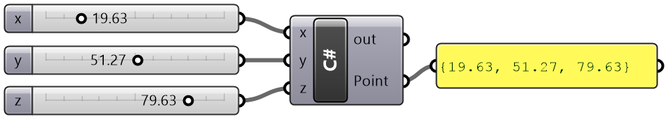
private void RunScript(double x, double y, double z, ref object Point)
{
// Create an instance of a point and initialize to x, y, and z
Point3d pt = new Point3d(x, y, z);
// Assign the point "pt" to output
Point = pt;
}
Point3d Properties
Properties are mostly used to “get” and/or “set” the fields of the structure. For example, there are the “X”, “Y”, and “Z” properties to get & set the coordinates of an instance of Point3d. Properties can be static to get specific points, such as the origin of the coordinate system (0,0,0). The following are Point3d properties as they appear in the documentation:
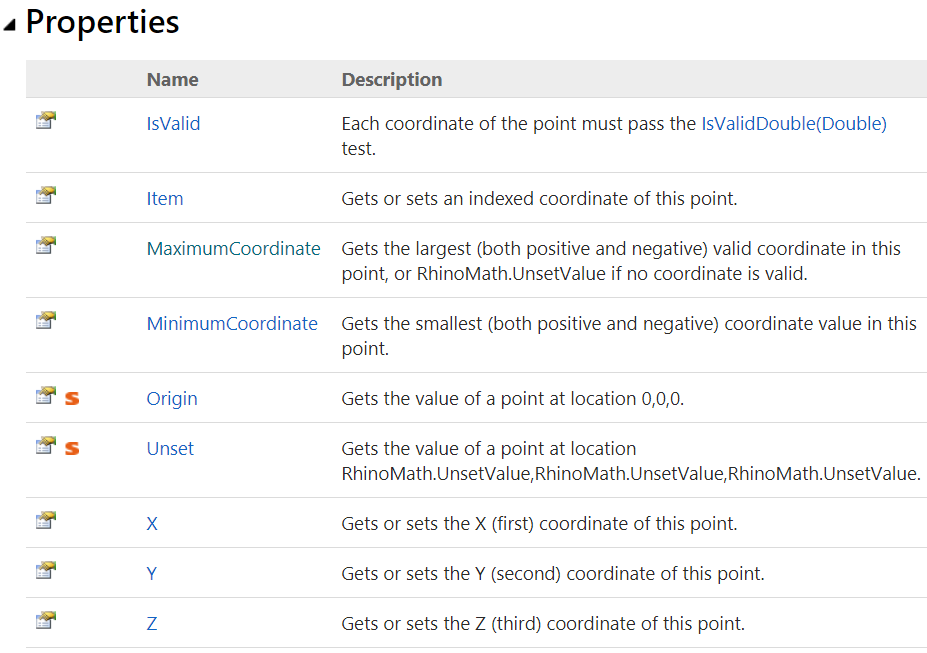
Here are two GH examples to show how to get & set the coordinates of a Point3d.
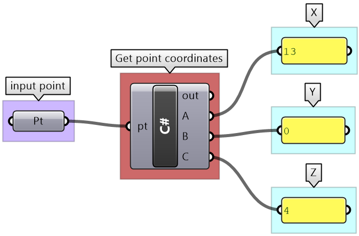
private void RunScript(Point3d pt, ref object A, ref object B, ref object C)
{
// Assign the point coordinates to output
a = pt.X;
b = pt.Y;
c = pt.Z;
}
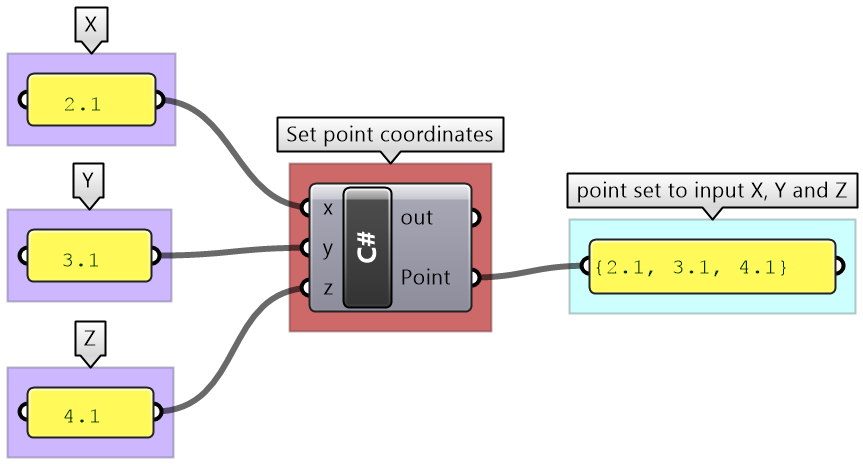
private void RunScript(double x, double y, double z, ref object Point)
{
// Declare a new point
Point3d newPoint = new Point3d(Point3d.Unset);
// Set "new_pt" coordinates
newPoint.X = x;
newPoint.Y = y;
newPoint.Z = z;
// Assign the point coordinates to output
Point = newPoint;
}
Static properties get or set a generic data of that type. The above example uses the static Point3d method Unset to unset the new point. Another example that is commonly used is the origin property in Point3d to get the origin of the coordinate system, which is (0,0,0) as in the following example.
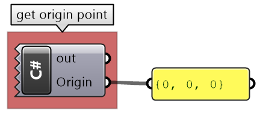
private void RunScript( ref object Origin)
{
Origin = Point3d.Origin;
}
Point3d Methods
The methods are used to help inquire about the data or perform specific calculations, comparisons, etc. For example, Point3d has a method to measure the distance to another point. All methods are listed in the documentation with full details about the parameters and the return value, and sometimes an example to show how they are used. In the documentation, Parameters refer to the input passed to the method and the Return Value describes the data returned to the caller. Notice that all methods can also be navigated through the left menu.
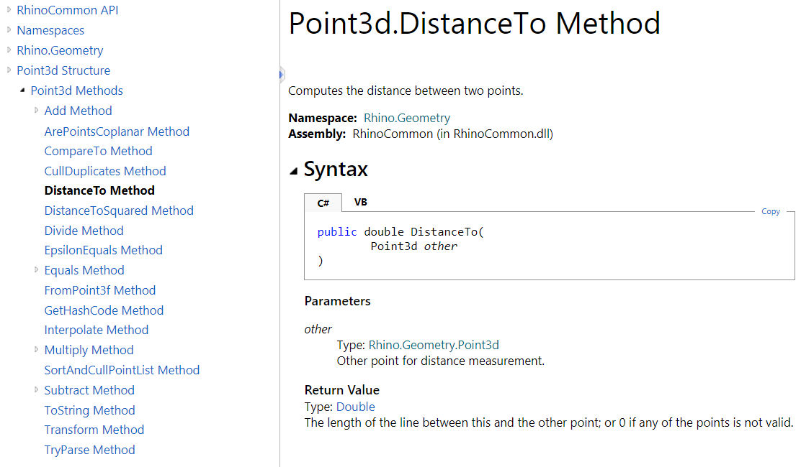
Here is how the DistanceTo method is used in an example.
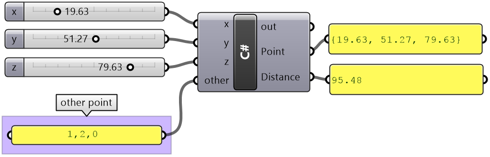
private void RunScript( double x, double y, double z, Point3d other, ref object Point, ref object Distance)
{
// Create an instance of a point and initialize to x, y, and z
Point3d pt = new Point3d(x, y, z);
// Calculate the distance from "pt" to the "other" input point
double dis = pt.DistanceTo(other);
// Assign the point "point" to the A output
Point = pt;
// Assign the distance to the B output
Distance = dis;
}
The DistanceTo method does not change the fields (the X, Y, and Z). However, other methods such as Transform change the fields. The Transform method resets the X, Y, and Z values to reflect the new location after applying the transform.
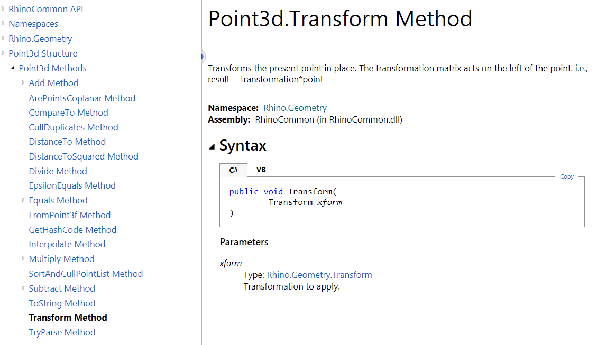
Here is an example that uses Point3d.Transform.
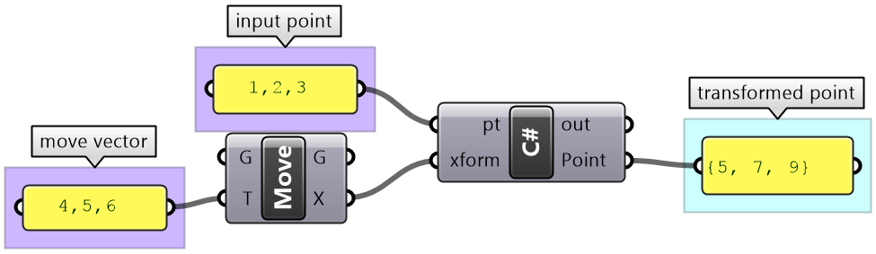
private void RunScript(Point3d pt, Transform xform, ref object Point)
{
// Create an instance of a point and initialize to input point
Point3d newPoint = new Point3d(pt);
// Transform the point
newPoint.Transform(xform);
// Assign the point "new_pt" to the A output
Point = newPoint;
}
Point3d Static Methods
Point3d has static methods that are accessible without instantiating an instance of Point3d. For example, if you would like to check if a list of given instances of points are all coplanar, you can call the static method Point3d.ArePointsCoplanar without creating an instance of a point. Static methods have the little red “s” symbol in front of them in the documentation.
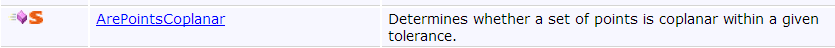
The ArePointsCoplanar has the following syntax, parameters, and the return value.
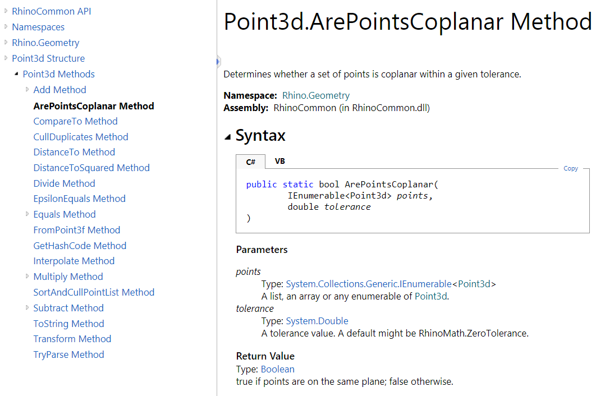
Here is an example that uses the static method Point3d.ArePointsCoplanar.
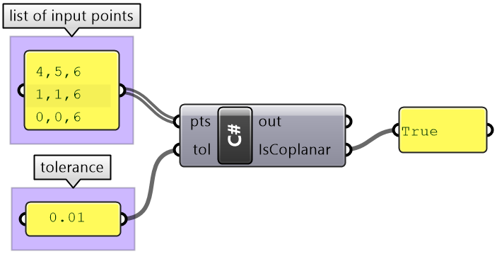
private void RunScript(List<Point3d> pts, double tol, ref object IsCoplanar)
{
// Test if the list of input points are coplanar
bool coplanar = Point3d.ArePointsCoplanar(pts, tol);
// Assign the co-planar test to output
IsCoplanar = coplanar;
}
Point3d Operators
Many Structures & Classes in RhinoCommon implement operators whenever relevant. Operators enable you to use the “+” to add two points or use the “=” to assign the coordinates of one point to the other. Point3d structure implements many operators, and this simplifies the coding & its readability. Although it is fairly intuitive in most cases, you should check the documentation to verify which operators are implemented and what they return. For example, the documentation of adding 2 Point3d indicates the result is a new instance of Point3d where X, Y, and Z are calculated by adding corresponding fields of 2 input Point3d.
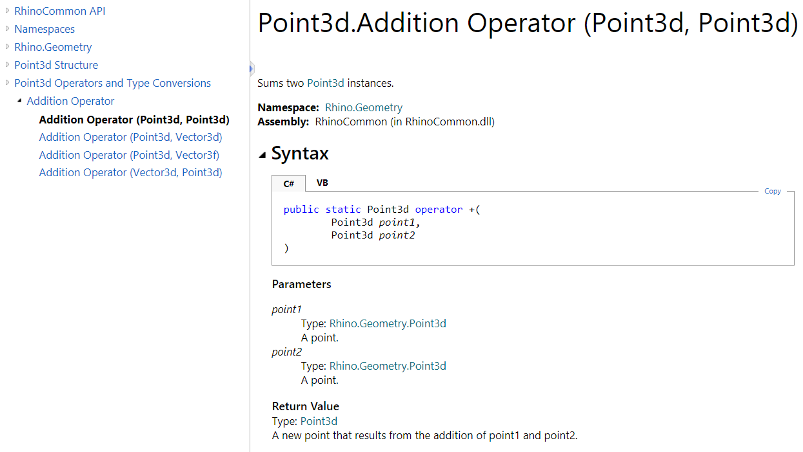
Note that all operators are declared public and static. Here is an example that shows how the “+” operator in Point3d is used. Note that the “+” returns a new instance of a Point3d.
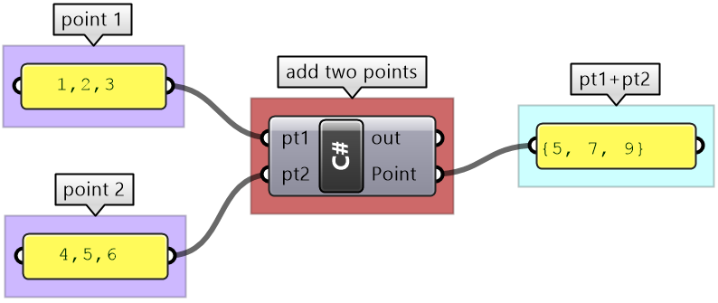
private void RunScript(Point3d pt1, Point3d pt2, ref object Point)
{
// Add 2 points and assign result to output
Point = pt1 + pt2;
}
Point3d as a Function Parameter
Point3d is a value type because it is a structure. That means if you pass an instance of Point3d to a function and change its value inside that function, the original value outside the function will not be changed, as in the following example:
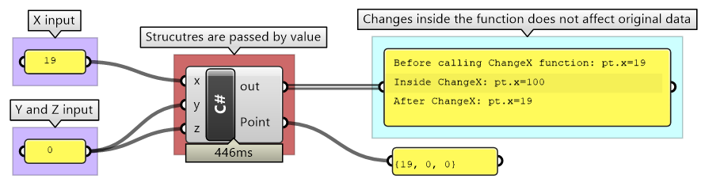
private void RunScript(double x, double y, double z, Point3d pt2, ref object Point)
{
Point3d pt = new Point3d(x, y, z);
Print("Before calling ChangeX function: pt.x=" + pt.X);
// Call a function to change the value of X in the point
ChangeX(pt);
Print("After ChangeX: pt.x=" + pt.X);
Point = pt;
}
public void ChangeX(Point3d pt)
{
pt.X = 100;
Print("Inside ChangeX: pt.x=" + pt.X);
}
3.2.2 Points & Vectors
RhinoCommon has a few structures to store and manipulate points and vectors. Take for example the double precision points. There are three types of points that are commonly used listed in the table below. For more detailed explanation of vectors and points, please refer to the Essential Mathematics for Computational Design, a publication by McNeel.
| Class Name | Member Variables | Notes |
|---|---|---|
| Point2d | X as Double Y as Double | Used for parameter space points |
| Point3d | X as Double Y as Double | Most commonly used to represent points in three dimensional coordinate space |
| Point4d | X as Double Y as Double Z as Double W as Double | Used for grips or control points. Grips have weight information in addition to the 3D location. |
As for vectors, there are two main types:
| Class Name | Member Variables | Notes |
|---|---|---|
| Vector2d | X as Double Y as Double | Used in two dimensional space |
| Vector3d | X as Double Y as Double Z as Double | Used in three dimensional space |
The following are a few point and vector operations with examples of output. The script starts with declaring and initializing a few values, then applying some operations:
| Notation | Syntax | result |
|---|---|---|
| Create a new instance of a point and vector |
|
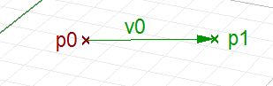 |
| Move a point by a vector |
|
|
| Distance between 2 points |
|
|
| Point subtraction (create vector between two points) |
|
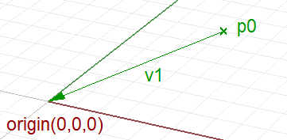 |
| Vector addition (create average vector) |
|
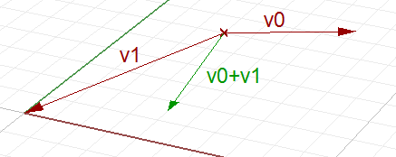 |
| Vector subtraction |
|
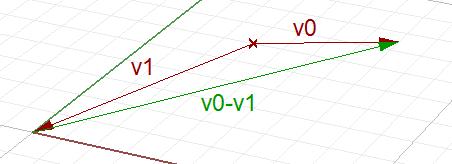 |
| Vector dot product (if result is positive number, then vectors are in the same direction) |
|
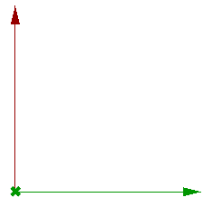 |
| Vector cross product (result is a vector normal to the 2 input vectors) |
|
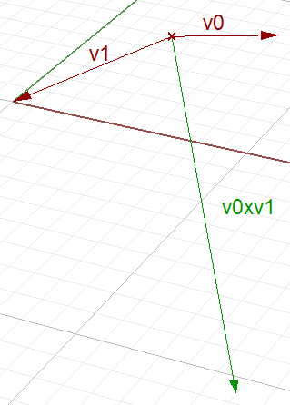 |
| Scale a vector |
|
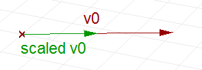 |
| Get vector length |
|
|
| Use vector operations to get the angle between 2 vectors |
|
|
3.2.3 Lightweight Curves
RhinoCommon defines basic types of curves such as lines & circles as structures, and hence, most of them are value types. The mathematical representation is easier to understand and is typically more lightweight. If needed, it is relatively easy to get the NURBS approximation of these curves using the method ToNurbsCurve. The following is a list of the lightweight curves:
| Lightweight Curves Types | |
|---|---|
| Line | Line between two points |
| Polyline | Polyline connecting a list of points (not value type) |
| Arc | Arc on a plane from center, radius, start, and end angles |
| Circle | Circle on a plane from center point and radius |
| Ellipse | Defined by a plane and 2 radii |
The following shows how to create instances of different lightweight curve objects:
| Notation | Syntax | Result |
|---|---|---|
| Declare and initialize 3 new Points |
|
|
| Create an instance of a Line |
|
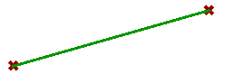 |
| Distance between 2 Points |
|
|
| Create an instance of a Arc |
|
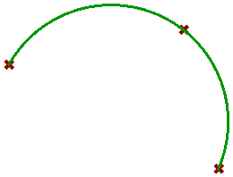 |
| Create an instance of a Polyline |
|
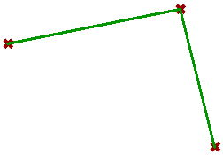 |
| Create an instance of a Circle |
|
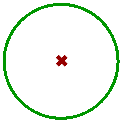 |
| Create an list of instances of an Ellipse |
|
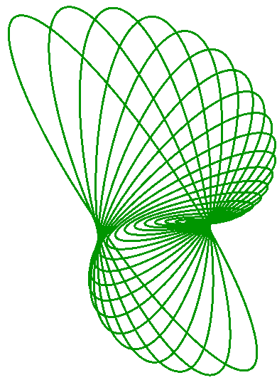 |
3.2.4 Lightweight Surfaces
Just like with curves, RhinoCommon defines a number of lightweight surfaces that are defined as structures. They can be converted to NURBS surfaces using the ToNurbsSurface() method. They include common surfaces such as cones & spheres. Here is a list of them:
| Lightweight Surface Types | |
|---|---|
| Sphere | Line between two points |
| Cylinder | Polyline connecting a list of points (not value type) |
| Cone | Arc on a plane from center, radius, start, and end angles |
| Torus | Circle on a plane from center point and radius |
The following shows how to create instances of different lightweight surface objects:
| Notation | Syntax | result |
|---|---|---|
| Create an instance of a Sphere |
|
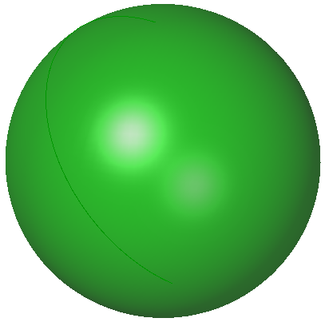 |
| Create an instance of a Cylinder |
|
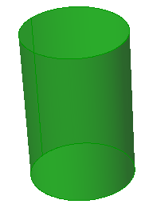 |
| Create an instance of a Cone |
|
|
| Create an instance of a Arc |
|
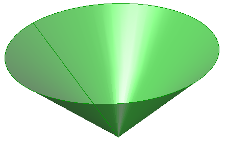 |
| Create an instance of a Polyline |
|
|
| Create an instance of a Torus |
|
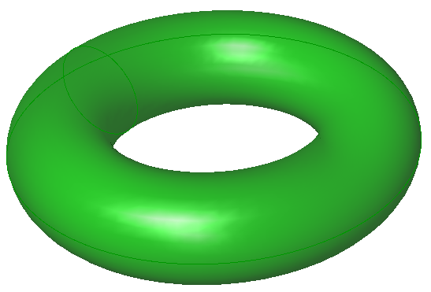 |
3.2.5 Other Geometry Structures
Now that we have explained the Point3d structure in some depth, and some of the lightweight geometry structures, you should be able to review & use the rest using the RhinoCommon documentation. As a wrap up, the following example uses eight different structures defined in the Rhino.Geometry namespace. Those are Plane, Point3d, Interval, Arc, Vector3d, Line, Sphere, and Cylinder. The goal is to create the following composition:
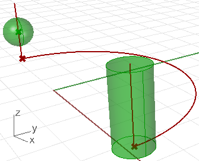
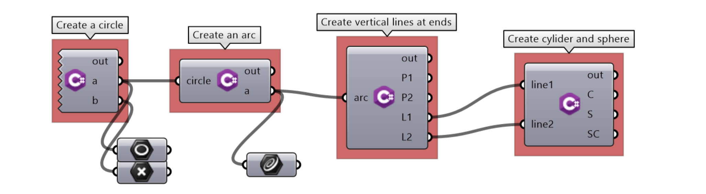
Create an instance of a circle on the xy-plane, center (2,1,0), and a random radius between 10 and 20
// Generate a random radius of a circle
Random rand = new Random();
double radius = rand.Next(10, 20);
// Create xy_plane using Plane static method WorldXY
Plane plane = Plane.WorldXY;
// Set plane origin to (2,1,0)
Point3d center = new Point3d(2, 1, 0);
plane.Origin = center;
// Create a circle from plane and radius
Circle circle = new Circle(plane, radius);
Create an instance of an arc from the circle and angle interval between 0 and Pi
// Create an arc from an input circle and interval
Interval angleInterval = new Interval(0, Math.PI);
Arc arc = new Arc(circle, angleInterval);
Extract the end points of the arc, and create a vertical lines with length = 10 units
// Extract end points
Point3d startPoint = arc.StartPoint;
Point3d endPoint = arc.EndPoint;
// Create a vertical vector
Vector3d vec = Vector3d.ZAxis;
// Use the multiplication operation to scale the vector by 10
vec = vec * 10;
// Create start & end lines
Line line1 = new Line(startPoint, vec);
Line line2 = new Line(endPoint, vec);
Create a cylinder around the start line with radius = line height/4, and crearte a sphere around the second line centered in the middle with radius = line height/4
// Create a cylinder at line1 with radius = 1/4 the length
double height = line1.Length;
double radius = height / 4;
Circle circle = new Circle(line1.From, radius);
Cylinder cylinder = new Cylinder(c_circle, height);
// Create a sphere at the center of line2 with radius = ¼ the length
Point3d sphereCenter = line2.PointAt(0.5);
Sphere sphere = new Sphere(sphereCenter, radius);
3.3 Geometry Classes
Just like structures, classes enable defining custom types by grouping other types together, along with some custom methods & events. A class is like a blueprint that encapsulates the data and the behavior of the user-defined type. But, unlike structures, classes allow inheritance which enables defining a hierarchy of types that starts with a generic type and branches into more specific types. For example, the Curve class in RhinoCommon branches into specialized curve types such as ArcCurve and NurbsCurve. The following diagram shows the hierarchy of the Curve class:
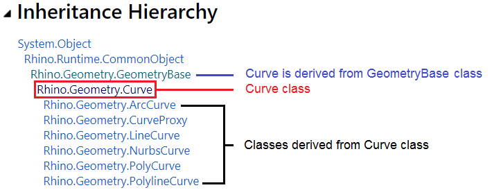
Most geometry classes are derived from the GeometryBase class. The following diagram shows the hierarchy of these classes:
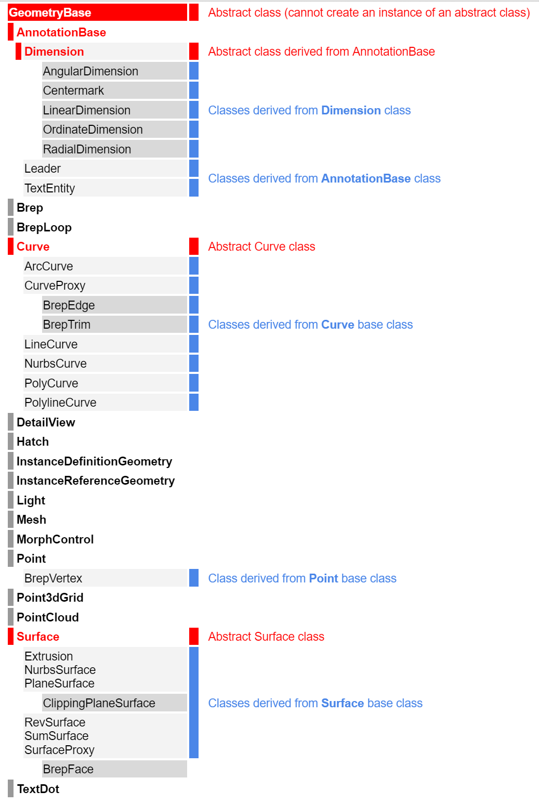
You can instantiate an instance of most of the classes above. However, there are some classes that you cannot instantiate. Those are usually higher in the hierarchy, such as the GeometryBase, Curve, and Surface. Those are called abstract classes.
- Abstract Classes: The GeometryBase in RhinoCommon is one example of an abstract class. You cannot create an object or instantiate an instance of an abstract class. The purpose is to define common data and functionality that all derived classes can share.
- Base Classes: refer to parent classes that define common functionality for the classes that are derived from them. The Curve class is an example of a base class that also happens to be an abstract (cannot instantiate an object from it). Base classes do not have to be abstract though.
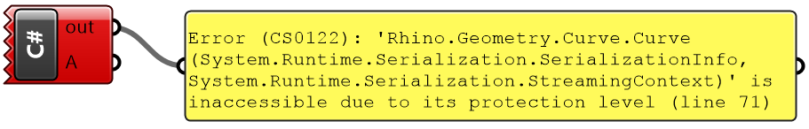
private void RunScript(ref object A)
{
// ERROR: attempt to create an instance of the abstract "Curve" class
Rhino.Geometry.Curve crv = new Rhino.Geometry.Curve();
}
- Derived Classes: inherit the members of a class they are derived from and add their own specific functionality and implementation. The NurbsCurve is an example of a derived class from the Curve class. The NurbsCurve can use all members in Curve class methods. The same is true for all other classes derived from Curve, such as ArcCurve & PolyCurve. The following example shows how to create a new instance of the PolylineCurve class:
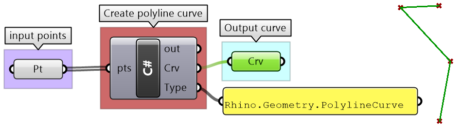
private void RunScript(List<Point3d> pts, int degree, ref object Crv, ref object Type)
{
// Declare & create a new instance of a polyline curve from points
var crv = new Rhino.Geometry.PolylineCurve(pts);
// Assign curve to A output
Crv = crv;
// Assign curve type to B output
Type = crv.GetType();
}
The most common way to create an instance of a class is to use the new keyword when declaring the object:
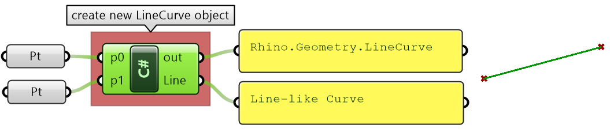
private void RunScript( Point3d p0, Point3d p1, ref object Line )
{
// Create an instance of a point object & unset
var lineCurve = new Rhino.Geometry.LineCurve(p0, p1);
Print(lineCurve.ToString());
Line = lineCurve
}
There is another common way to create instances of classes. That is to use special methods in some classes to help create and initialize a new instance of an object. For example, the Curve class has static methods to create a variety of curve types, as in the following example. Notice that you do not need to use new in this case:
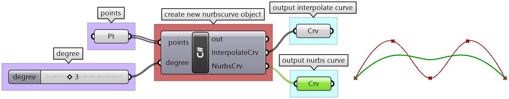
private void RunScript(List<Point3d> points, int degree, ref object A, ref object B)
{
// Declare a curve variable
Rhino.Geometry.Curve inter_crv = default(Rhino.Geometry.Curve);
// Create new instance of a curve from interpolate points
inter_crv = Rhino.Geometry.Curve.CreateInterpolatedCurve(points, degree);
// Declare a curve variable
Rhino.Geometry.Curve nurbs_crv = default(Rhino.Geometry.Curve);
// Create new instance of a curve from control points
nurbs_crv = Rhino.Geometry.Curve.CreateControlPointCurve(points, degree);
// Assign output
A = inter_crv;
B = nurbs_crv;
}
The following sections summarize the different ways to create new instances of objects, which apply to both class & structure types:
Use the Class Constructor
Need to use the new keyword. For example, the following creates a line from two points:
Rhino.Geometry.LineCurve lc = new Rhino.Geometry.LineCurve(p0, p1);
Note that each class may have a number of constructors that include different sets of parameters. For example the LineCurve class has the following constructors:
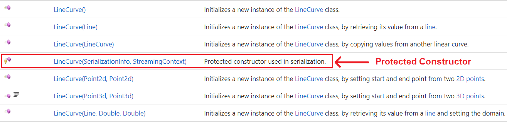
Many times, there are “protected” constructors. Those are used internally by the class and you cannot use them to create a new instance of the object with them. They are basically locked. The LineCurve class has one marked in the image above.
Use the Class Static Create Methods
Some classes include a Create method to generate a new instance of the class. Here is an example:
Rhino.Geometry.NurbsCurve nc = NurbsCurve.Create(isPeriodic, degree, controlPoints);
You can find these methods in the RhinoCommon help when you navigate the class “members”. Here are different ways to create a NurbsCurve for example and how they appear in the help:
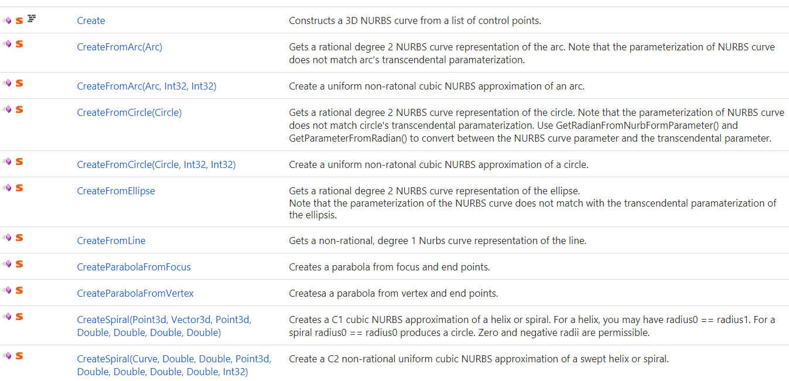
Use the Static Create Methods of the Parent Class
There are times when the parent class has “Create” methods that can be used to instantiate an instance of the derived class. For example, the Curve class has few static methods that a derived class like NurbsCurve can use as in the example:
Rhino.Geometry.Curve crv= Curve.CreateControlPointCurve(controlPoints, degree);
Rhino.Geometry.NurbsCurve nc = crv as Rhino.Geometry.NurbsCurve;
For the full set of the Curve Create methods, check the RhinoCommon documentation. Here is an example of a few of them:
Use the Return Value of a Function
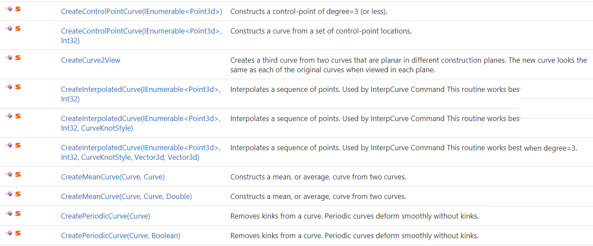
Class methods return values and sometimes those are new instances of objects. For example, the Offset method in the Curve class returns a new array of curves that is the result of the offset.
Curve[ ] offsetCurves = x.Offset( Plane.WorldXY, 1.4, 0.01, CurveOffsetCornerStyle.None );
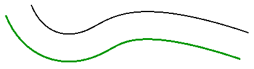
Once you create an instance of a class or a structure, you will be able to see all class methods and properties through the auto-complete feature. When you start filling the method parameters, the auto-complete will show you which parameter you are at and its type. This is a great way to navigate all available methods for each class and be reminded of what parameters are needed. Here is an example from a Point3d structure. Note that you don’t always get access to all the methods via the auto-complete. For the complete list of properties, operations, and methods of each class, you should use the RhinoCommon help file.
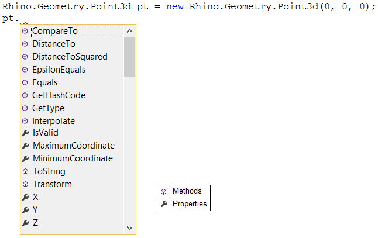
Classes and structures define properties to set & retrieve data. Each property has either a Get or a Set method, or both. The following example shows how to get and set the coordinates of a Point3d object:
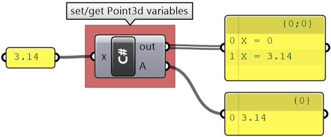
private void RunScript(double degree, ref object A)
{
// Create an instance of a point object and initialize to origin (0,0,0)
Point3d pt = new Point3d(0, 0, 0);
// Get coordinates and print to "output"
Print("X = " + pt.X);
// Set the x coordinate to a new value from input
pt.X = x;
// Print the new x value
Print("X = " + pt.X);
// Get the pt "x" value and assign to output
A = pt.X;
}
Copying data from an existing class to a new one can be done a few different ways depending on what the class supports. The following example shows how to copy data between two points using three different ways. It also shows how to use the DuplicateCurve method of the Curve class to create a new identical instance of a Curve:
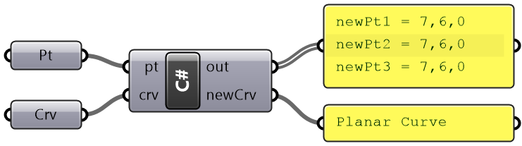
private void RunScript(Point3d pt, Curve crv, ref object newCrv)
{
// Different ways to copy data between objects
// Use the constructor when you instantiate an instance Of the Point3d class
Point3d newPt1 = new Point3d(pt);
Print("new pt1 = " + newPt1.ToString());
// Use the “= Operator” If the Class provides one
Point3d newPt2 = new Point3d(Point3d.Unset);
newPt2 = pt;
Print("new pt2 = " + newPt2.ToString());
// Copy the properties one by one
Point3d newPt3 = new Point3d(Point3d.Unset);
newPt3.X = pt.X;
newPt3.Y = pt.Y;
newPt3.Z = pt.Z;
Print("new pt3 = " + newPt3.ToString());
// Some geometry classes provide a “Duplicate” method that is very efficient to use
newCrv = crv.DuplicateCurve();
}
3.3.1 Curves
The RhinoCommon SDK has the abstract Rhino.Geometry.Curve class that provides a rich set of functionality across all curves. There are many classes derived from the parent Curve class, and we will learn about how to create and manipulate them. The following is a list of the classes derived from the Curve class:
| Curve Types | Notes |
|---|---|
| ArcCurve | Used to create arcs & circles |
| LineCurve | Used to create lines |
| NurbsCurve | Used to create freeform curves |
| PolyCurves | A curve that has multiple segments joined together |
| PolylineCurve | A curve that has multiple lines joined together |
| CurveProxy | Cannot instantiate an instance of it. Both BrepEdge & BrepTrim types are derived from the CurveProxy class. |
Create Curve Objects
One way to create a curve object is to use the create methods available as static methods in the parent Rhino.Geometry.Curve class. Here is an example:
Create an instance of a NurbsCurve from control points and degree
Curve nc = Rhino.Geometry.Curve.CreateControlPointCurve(points, degree);
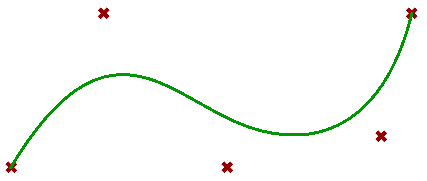
Create an array of tween curves using two input curves and a the number of tween curves
// Declare a variable of type Curve
Curve[ ] tweenCurves = null;
// Create an array of tween curves
tweenCurves = Rhino.Geometry.Curve.CreateTweenCurves(curve0, curve1, count, 0.01);
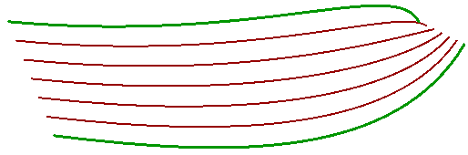
Another way to create new curves is to use the constructor of the curve with the new keyword. The following are examples to create different types of curves using the constructor or the Create method in the class. You can reference the RhinoCommon help for more details about the constructors of each one of the derived curve classes.
The following example uses 3 new declared points:
Point3d p0 = new Point3d(0, 0, 0);
Point3d p1 = new Point3d(5, 1, 0);
Point3d p2 = new Point3d(6, -3, 0);
Create an instance of a LineCurve using the class constructor and new keyword:
// Create an instance of an LineCurve
LineCurve line = new LineCurve(p0, p1);
Create an instance of a ArcCurve using the class constructor and new keyword:
// Create an instance of a lightweight Arc to pass to the
// constructor of the ArcCurve class
Arc arc = new Arc(p0, p1, p2);
// Create a new instance of ArcCurve
ArcCurve arcCurve = new ArcCurve(arc);
Create an instance of a PolylineCurve using the class constructor and new keyword
// Put the 3 points in a list
Point3d[ ] pointList = {p0, p1, p2};
// Create an instance of an PolylineCurve
PolylineCurve polyline = new PolylineCurve(pointList);
Create one open and one closed (periodic) curve using the Create function of the NurbsCurve class
bool isPeriodic = false;
int degree = 3;
NurbsCurve openCurve = NurbsCurve.Create(isPeriodic , degree, pointList);
isPeriodic = true;
NurbsCurve periodicCurve = NurbsCurve.Create(isPeriodic , degree, pointList);
Curves can also be the return value of a method. For example, offsetting a given curve creates one or more new curves. Also the surface IsoCurve method returns an instance of a curve.
Extract isocurve from a surface. A new instance of a curve is the return value of a method:
// srf = input surface, t = input parameter
var uIso = srf.IsoCurve(0, t);
var vIso = srf.IsoCurve(1, t);
Or, create multiple offsets of a curve:
private void RunScript(Curve crv, int num, double dis, double tol, Plane plane)
{
// Declare the list of curve
List<Curve> crvs = new List<Curve>();
Curve lastCurve = crv;
for (int i = 1; i <= num; i++)
{
Curve[ ] curveArray = last_crv.Offset(plane, dis, tol, CurveOffsetCornerStyle.None);
// Ignore if output is multiple offset curves
if (crv.IsValid && curveArray.Count() == 1) {
// Append offset curve to array
crvs.Add(curveArray[0]);
// Update the next curve to offset
lastCUrve = curveArray[0];
}
else
break;
}
}
Curve Methods
Each class can define methods that help navigate the data of the class and extract some relevant information. For example, you might want to find the endpoints of a curve, find the tangent at some point, get a list of control points, or divide the curve. AutoComplete helps to quickly navigate and access these methods, but you can also find the full description in the RhinoCommon help.
Keep in mind that a derived class such as NurbsCurve can access not only its own methods but also the methods of the classes it was derived from. Therefore, an instance of a NurbsCurve can access the NurbsCurve methods and the Curve methods as well. The methods that are defined under the Curve are available to all of the classes derived from the Curve class, such as LineCurve, ArcCurve, NurbsCurve, etc. Here are a few examples of curve methods:
| NurbsCurve methods | |
|---|---|
|
|
|
|
|
|
|
|
|
|
|

|
3.3.2 Surfaces
There are many surface classes derived from the abstract Rhino.Geometry.Surface class. The Surface class provides common functionality among all of the derived types. The following is a list of the surface classes and a summary description:
| Surface Types | Notes |
|---|---|
| Extrusion | Represents surfaces from extrusion. It is much lighter than a NurbsSurface. |
| NurbsSurface | Used to create free form surfaces |
| PlaneSurface | Used to create planar surfaces |
| RevSurface | Represents a surface of revolution |
| SumSurface | Represents a sum surface or an extrusion of a curve along a curved path |
| SurfaceProxy | Cannot instantiate an instance of it. Provides a base class to brep faces and other surface proxies |
Create Surface Objects
One way to create surfaces is by using the static methods in the Rhino.Geometry.Surface class that start with the keyword Create. Here are some of these create methods:
| Create methods in Rhino.Geometry.Surface class | ||
|---|---|---|
| CreateExtrusion | Constructs a surface by extruding a curve along a vector | |
| CreateExtrusionToPoint | Constructs a surface by extruding a curve to a point | |
| CreatePeriodicSurface | Constructs a periodic surface from a base surface & a direction | |
| CreateRollingBallFillet | Constructs a rolling ball fillet between two surfaces | |
| CreateSoftEditSurface | Creates a soft-edited surface from an existing surface using a smooth field of influence | |
The following example creates a fillet surfaces between 2 input surfaces given some radius & tolerance:
private void RunScript(Surface srfA, Surface srfB, double radius, double tol, ref object A)
{
// Declare an array of surfaces
Surface[ ] surfaces = {};
// Check for a valid input
if (srfA != null && srfB != null) {
// Create fillet surfaces
surfaces = Surface.CreateRollingBallFillet(srfA, srfB, radius, tol);
}
}
However, the most common way to create a new instance of a derived surface type is to either use the constructor (with new keyword) or the Create method of the derived surface class. Here are a couple of examples that show how to create instances from different surface types:
| Notation | Syntax | result |
|---|---|---|
| Create an instance of a **PlaneSurface** using the constructor & **new** keyword |
|
|
| Create an instance of a **RevSurface** from a line & a profile curve |
|
|
| Create an instance of a **NurbsSurface** from a list of control points |
|
|
| Create an instance of a **NurbsSurface** from extruding a curve in certain direction |
|
Surface Methods
Surface methods help edit & extract information about the surface object. For example, you might want to learn if the surface is closed or if it is planar. You might need to evaluate the surface at some parameter to calculate points on the surface or get its bounding box. There are also methods to extract a lightweight geometry out of the surface. They start with the “Try” keyword. For example, you might have a RevSurface that is actually a portion of a torus. In that case, you can call TryGetTorus. All these methods and many more can be accessed through the surface methods. A full list of these methods is documented in the RhinoCommon SDK documentation.
| Examples of the **Surface** & **NurbsSurface** methods | |
|---|---|
|
|
|
|
|
|
|
3.3.3 Meshes
Meshes represent a geometry class that is defined by faces & vertices. The mesh data structure basically includes a list of vertex locations, faces that describe vertices connections, and normal of vertices & faces. More specifically, the geometry lists of a mesh class include the following:
| Mesh geometry | Description |
|---|---|
| Vertices | Of type MeshVertexList - includes a list of vertex locations type Point3f |
| Normals | Of type MeshVertexNormalList - includes a list of normals of type Vector3f |
| Faces | Of type MeshFaceList - includes a list of normals of type MeshFace |
| FaceNormals | Of type “MeshFaceNormalList” - includes a list of normals of type Vector3f |
Create Mesh Objects
You can create a mesh from scratch by specifying vertex locations & faces and compute the normal as in the following examples:
| Examples of the **Mesh** methods | |
|---|---|
|
|
|
The Mesh class includes many CreateFrom static methods to create a new mesh from various other geometry. Here is the list with description as it appears in the RhinoCommon help:
Here are a couple examples to show how to create a mesh from a brep & a closed polyline:
| **Mesh** Samples | |
|---|---|
|
|
|
Navigate Mesh Geometry & Topology
You can navigate mesh data using Vertices & Faces properties. The list of vertices & faces are stored in a collection class or type with added functionality to manage the list efficiently. Vertices list, for example, is of type MeshVertexList. So if you need to change the locations of mesh vertices, then you need to get a copy of each vertex, change the coordinates, then reassign in the vertices list. You can also use the Set methods inside the MeshVertexList class to change vertex locations.
The following example shows how to randomly change the Z coordinate of a mesh using two different approaches. Notice that mesh vertices use a Point3f and not Point3d type because mesh vertex locations are stored as a single precision floating point.
| Change the location of mesh vertices by assigning the new value to the Vertices’ list | |
|---|---|
|
| Change the location of mesh vertices using the **SetVertix** method | |
|---|---|
|
Here is an example that deletes a mesh vertex and all surrounding faces:
| Delete mesh Vertices randomly | |
|---|---|
|
You can also manage the Faces list of a mesh. Here is an example that deletes about half the faces randomly from a given mesh:
| Delete mesh faces randomly | |
|---|---|
|
Meshes keep track of the connectivity of the different parts of the mesh. If you need to navigate related faces, edges, or vertices, then this is done using the mesh topology. The following example shows how to extract the outline of a mesh using the mesh topology:
| Mesh topology example: extract the outline of a mesh | |
|---|---|
|
Mesh Methods
Once a new mesh object is created, you can edit & extract data out of that mesh object. The following example extracts naked edges out of some input mesh:
| Extract the outline of a mesh | |
|---|---|
|
| Test if a given point is inside a closed mesh | |
|---|---|
|
| Delete every other mesh face, then split disjoint meshes | |
|---|---|
|
3.3.4 Boundary Representation (Brep)
The boundary representation is used to unambiguously represent trimmed nurbs surfaces and polysurfaces. There are two sets of data that are needed to fully describe the 3D objects using the boundary representation. Those are geometry & topology.
Brep Geometry
Three geometry elements are used to create any Breps:
- The 3D untrimmed nurbs surfaces in the modeling space
- The 3D curves, which are the geometry of edges in modeling space
- The 2D curves, which are the geometry of trims in the parameter space
Brep Topology
A topology refers to how different parts of the 3D object are connected. For example, we might have two adjacent faces with one of their edges aligned. There are two possibilities to describe the relationship or connectivity between these two faces. They could either be two separate entities that can be pulled apart, or they are joined in one object sharing that edge. The topology is the part that describes such relationships.
Brep topology includes faces, edges, vertices, trims, and loops. The following diagram lists the Brep topology elements and their relation to geometry in the context of RhinoCommon:
The topology elements of the Brep can be defined as follows:
| Topology | Referenced Geometry | Description |
|---|---|---|
| Vertices | 3D points (location in 3D space) | They describe the corners of the brep. Each vertex has a 3D location. They are located at the ends of edges and are shared between neighboring edges. |
| Edges | 3D Nurbs curves (location in 3D space) | Edges describe the bounds of the brep. Each references the 3D curve, two end vertices, and the list of trims. If an edge has more than one trim, that means the edge is shared among more than one face. Multiple edges can reference the same 3D curve (typically a different portion of it). |
| Faces | 3D underlying NURBS surfaces(location in 3D space) | Faces reference the 3D surface and at least one outer loop. A face normal direction might not be the same as that of the underlying surface normal. Multiple faces can reference the same 3D surface (typically a different portion of it). |
| Loops | 2D closed curves of connected trims (in 2D parameter space) | Each face has exactly one outer loop defining the outer boundary of the face. A face can also have inner loops (holes). Each loop contains a list of trims. |
| Trims | 2D Curves (in 2D parameter space) | Each trim references one 2D curve & exactly one edge, except in singular trims, there is no edge. The 2D curves of the trims run in a consistent direction. Trims of outer or boundary of the face run counter-clockwise regardless of the 3D curve direction of its edge. The 2D curves of the trims of the inner loops run clockwise. |
Each brep includes lists of geometry & topology elements. Topology elements point to each other and the geometry they reference, which makes it easy to navigate through the brep data structure. The following diagram shows navigation paths of the brep topology & geometry elements:
The topology of the Brep and navigating different parts:
Brep brep = … // from input
// BrepFace topology (3D modeling space)
Rhino.Geometry.Collections.BrepFaceList faces = brep.Faces;
for(int fi = 0; fi < faces.Count; fi++)
{
BrepFace face = faces[fi];
// Get Adjacent faces
var aFaces = face.AdjacentFaces();
// Get Adjacent edges
var aEdges = face.AdjacentEdges();
// Get face loops
var faceLoops = face.Loops;
// Get the 3D untrimmed surface
var face3dSurface = face.UnderlyingSurface();
}
// BrepLoop topology (2D parameter space)
Rhino.Geometry.Collections.BrepLoopList loops = brep.Loops;
for(int li = 0; li < loops.Count; li++)
{
BrepLoop loop = loops[li];
// Get loop face
var loopFace = loop.Face;
// Get loop trims
var loopTrims = loop.Trims;
// Get loop 2D & 3D curves
var loop2dCurve = loop.To2dCurve();
var loop3dCurve = loop.To3dCurve();
}
// BrepEdge topology (3D modeling space)
Rhino.Geometry.Collections.BrepEdgeList edges = brep.Edges;
for(int ei = 0; ei < edges.Count; ei++)
{
BrepEdge edge = edges[ei];
// Get edge faces
var eFaces_i = edge.AdjacentFaces();
// Get edge start & end vertices
var eStartVertex = edge.StartVertex;
var eEndVertex = edge.EndVertex;
// Get edge trim indices
var eTrimIndeces = edge.TrimIndices();
// Get edge 3D curve
var e3dCurve = edge.EdgeCurve;
}
// BrepTrim topology (2D parameter space)
Rhino.Geometry.Collections.BrepTrimList trims = brep.Trims;
for(int ti = 0; ti < trims.Count; ti++)
{
BrepTrim trim = trims[ti];
// Get the edge
var trimEdge = trim.Edge;
// Get trim start & end vertices
var trimStartVertex = trim.StartVertex;
var trimEndVertex = trim.EndVertex;
// Get trim loop
var trimLoop = trim.Loop;
// Get trim face
var trimFace = trim.Face;
// Get trim 2D curve
var trim2dCurve = trim.TrimCurve;
}
// BrepVertex topology (3D modeling space)
Rhino.Geometry.Collections.BrepVertexList vertices = brep.Vertices;
for(int vi = 0; vi < vertices.Count; vi++)
{
BrepVertex vertex = vertices[vi];
// Get vertex edges
var vEdges = vertex.EdgeIndices();
// Get vertex location
var vPoint = vertex.Location;
}
In polysurfaces (which are Breps with multiple faces), some geometry and topology elements are shared along the connecting curves & vertices where polysurface faces join together. In the following example, the two faces F0 & F1 share one edge E0 and two vertices V0 & V2.
As illustrated before, Breps has a rather complex data structure, and it is useful to learn how to navigate this data. The following examples show how to get some of the geometry parts:
Example to count geometry & topology elements of a Brep and then extract the 3D geometry
Brep brep = … // from input
// Print the number of geometry elements
Print("brep.Vertices.Count = {0}", brep.Vertices.Count);
Print("brep.Curves3D.Count = {0}", brep.Curves3D.Count);
Print("brep.Curves2D.Count = {0}", brep.Curves2D.Count);
Print("brep.Surfaces.Count = {0}", brep.Surfaces.Count);
// Print the number of topology elements
Print("brep.Trims.Count = {0}", brep.Trims.Count);
Print("brep.Loops.Count = {0}", brep.Loops.Count);
Print("brep.Faces.Count = {0}", brep.Faces.Count);
Print("brep.Edges.Count = {0}", brep.Edges.Count);
// Extract 3d geometry elements
var V = brep.Vertices;
var C = brep.Curves3D;
var S = brep.Surfaces;
Example to extract the outline of a Brep ignoring all holes
Brep brep = … // from input
// Declare outline list of curves
List<Curve> outline = new List<Curve>();
// Check all the loops and extract naked that are not inner
foreach (BrepLoop eLoop in brep.Loops) {
// Make sure the loop type is outer
if (eLoop.LoopType == BrepLoopType.Outer) {
// Navigate through the trims of the loop
foreach (BrepTrim trim in eLoop.Trims) {
// Get the edge of each trim
BrepEdge edge = trim.Edge;
// Check if the edge has only one trim
if (edge.TrimCount == 1) {
// Add a copy of the edge curve to the list
outline.Add(edge.DuplicateCurve());
}
}
}
}
Example to extract all the faces of a Brep box and move them away from the center:
Brep brep = … // from input
// Declare a new list of faces
List<Brep> faces = new List<Brep>();
// Find the center
Point3d center = brep.GetBoundingBox(true).Center;
for (int i = 0; i <= brep.Faces.Count - 1; i++) {
// Extract the faces
int[ ] iList = { i };
Brep face = brep.DuplicateSubBrep(iList);
// Find face center
Point3d faceCenter = face.GetBoundingBox(true).Center;
// Find moving direction
Vector3d dir = new Vector3d();
dir = faceCenter - center;
// Move the face and add to the list
face.Translate(dir);
faces.Add(face);
}
Create Brep Objects
The Brep class has many Create methods. For example, if you need to create a twisted box, then you can use the CreateFromBox method in the Brep class as in the following. You can also create a surface out of boundary curves or create a solid out of bounding surfaces.
Create a Brep from corners
List<Point3d> corners = … // from input
// Create the brep from corners
Brep twistedBox = Brep.CreateFromBox(corners);
Create a Brep from bounding edge curves
List<Curve> crvs = … // from input
// Build the brep from edges
Brep edgeBrep = Brep.CreateEdgeSurface(crvs);
Create a Brep from bounding surfaces
List<Brep> breps = … // from input
double tol = … // from input
// Build the brep from corners
Brep[ ] solids = Brep.CreateSolid(breps, tol);
Brep Methods
Here is a list of some of the commonly used create methods found under the Brep class. For the full list and details about each method, please refer to the RhinoCommon SDK help.
The Brep methods serve multiple functions. Some are to extract information such as finding out if the brep is solid (closed polysurface), others perform calculations in relation to the brep such as area, volume or find a point inside a solid. Some methods change the brep, such as cap holes or merge coplanar faces. Methods that operate on multiple instances of breps include joining or performing some boolean operations. The following are examples to show the range of Brep methods:
Example methods to extract Brep information: Find if a brep is valid & is a solid
Brep[] breps = … // from input
List<bool> isSolid = new List<bool>();
foreach( Brep brep in breps)
if( brep.IsValid )
isSolid.Add(brep.IsSolid);
Example to calculate a brep area, volume, and centroid
Brep brep = … // from input
// Declare variable
double area = 0;
double volume = 0;
Point3d vc = default(Point3d);
// Create a new instance of the mass properties classes
VolumeMassProperties volumeMp = VolumeMassProperties.Compute(brep);
AreaMassProperties areaMp = AreaMassProperties.Compute(brep);
// Calculate area, volume, and centroid
area = brep.GetArea(); // or use: area = areaMp.Area
volume = brep.GetVolume(); // or use: volume = volumeMp.Volume
centroid = volumeMp.Centroid;
Example methods that change a brep topology: merge coplanar faces in a brep
Brep brep = … // from input
double tol = 0.01;
bool merged = brep.MergeCoplanarFaces(tol);
Example methods that operate on multiple breps: Boolean union 2 breps
List<Brep> breps = … // from input
// Boolean union the input breps
Brep[ ] unionBrep = Brep.CreateBooleanUnion(breps, tol);
3.3.5 Other Geometry Classes
There are many important classes under the Rhino.Geometry namespace that are not derived from GeometryBase. Those are commonly used when writing scripts to create & manipulate geometry. We used a couple of them in the examples. You can find the full list of RhinoCommon classes in the documentation. Most of these classes are derived directly from the C# abstract class System.Object. This is the inheritance hierarchy for these classes:
One important cluster of classes in this list has to do with extracting 2D outlines of the geometry, (Make2D). These classes start with HiddenLineDrawing keyword. The following diagram shows the sequence of creating the drawing and which classes are used in each step:
The first step involves setting the parameters such as the source geometry, view, and all other options. Once the parameters are set, the HLD core class can calculate all the lines and hand back to the HLD Segment class with all visibility information & associated source. The user can then use this information to create the final drawing.
Create 2D drawing from 3D geometry (Make2D)
List<GeometryBase> geomList = … // from input
List<Plane> cplaneList = … // from input
// Use the active view in the Rhino document
var _view = doc.Views.ActiveView;
// Set Make2D Parameters
var _hldParams = new HiddenLineDrawingParameters
{
AbsoluteTolerance = doc.ModelAbsoluteTolerance,
IncludeTangentEdges = false,
IncludeHiddenCurves = true
};
_hldParams.SetViewport(_view.ActiveViewport);
// Add objects to hld_param
foreach (var geom in geomList){
_hldParams.AddGeometry(geom, Transform.Identity, null);
}
// Add clipping planes
foreach (var cplane in cplaneList ){
_hldParams.AddClippingPlane(cplane);
}
// Perform HLD calculation
var visibleList = new List<Curve>();
var hiddenList = new List<Curve>();
var secVisibleList = new List<Curve>();
var secHiddenList = new List<Curve>();
var _hld = HiddenLineDrawing.Compute(_hldParams, true);
if (_hld != null)
{
// Transform
var flatten = Transform.PlanarProjection(Plane.WorldXY);
BoundingBox pageBox = _hld.BoundingBox(true);
var delta2D = new Vector2d(0, 0);
delta2D = delta2D - new Vector2d(pageBox.Min.X, pageBox.Min.Y);
var delta3D = Transform.Translation(new Vector3d(delta2D.X, delta2D.Y, 0.0));
flatten = delta3D * flatten;
// Add curves to lists
foreach (HiddenLineDrawingSegment hldCurve in _hld.Segments)
{
if (hldCurve == null ||
hldCurve.ParentCurve == null ||
hldCurve.ParentCurve.SilhouetteType == SilhouetteType.None)
continue;
var crv = hldCurve.CurveGeometry.DuplicateCurve();
if (crv != null)
{
crv.Transform(flatten);
if (hldCurve.SegmentVisibility == HiddenLineDrawingSegment.Visibility.Visible)
{
if (hldCurve.ParentCurve.SilhouetteType == SilhouetteType.SectionCut)
secVisibleList.Add(crv);
else
visibleList.Add(crv);
}
else if (hldCurve.SegmentVisibility == HiddenLineDrawingSegment.Visibility.Hidden)
{
if (hldCurve.ParentCurve.SilhouetteType == SilhouetteType.SectionCut)
secHiddenList.Add(crv);
else
hiddenList.Add(crv);
}
}
}
}
3.4 Geometry Transformations
All classes derived from GeometryBase inherit four transformation methods. The first three are probably the most commonly used which are Rotate, Scale, and Translate. But, there is also a generic Transform method that takes a Transform structure and can be set to any transformation matrix. The following example shows how to use the scale, rotate, and translate methods on a list of geometry objects.
Use different transformation methods (Scale, Rotate, and Translate)
List<GeometryBase> objs = … // from input
// Create a new list of geometry objects
List<GeometryBase> newObjs = new List<GeometryBase>();
foreach (GeometryBase obj in objs) {
// Scale, rotate, and move
obj.Scale(factor);
obj.Rotate(angle, Vector3d.YAxis, Point3d.Origin);
obj.Translate(dir);
// Add to list
newObjs.Add(obj);
}
The Transform structure is a 4x4 matrix with several methods to help create geometry transformations. This includes defining a shear, projection, rotation, mirror, and others. The structure also has functions that support operations such as multiplication & transpose. For more information about the mathematics of transformations, please refer to “The Essential Mathematics for Computational Design”. The following examples show how to create a shear transform & planar projection:
Create shear transformation and output the matrix
Brep brep = … // from input
// Create a shear transform
Plane p = Plane.WorldXY;
var v = new Vector3d(0.5, 0.5, 0);
var y = Vector3d.YAxis;
var z = Vector3d.ZAxis;
var xform = Transform.Shear(p, v, y, z);
// Shear the Brep
brep.Transform(xform);
Create planar projection transform to project curves
List<GeometryBase> objs = … // from input
// Create a new list of geometry objects
List<GeometryBase> newObjs = new List<GeometryBase>();
foreach (GeometryBase obj in objs) {
// Create a project transform
obj.Transform(Transform.PlanarProjection(Plane.WorldXY));
// Add to list
newObjs.Add(obj);
}
Next Steps
That was a basic overview of RhinoCommon Geometry in Rhino. Now learn to use these methods in Design Algorithms to get something done.
This is part 3 of the Essential C# Scripting for Grasshopper guide.